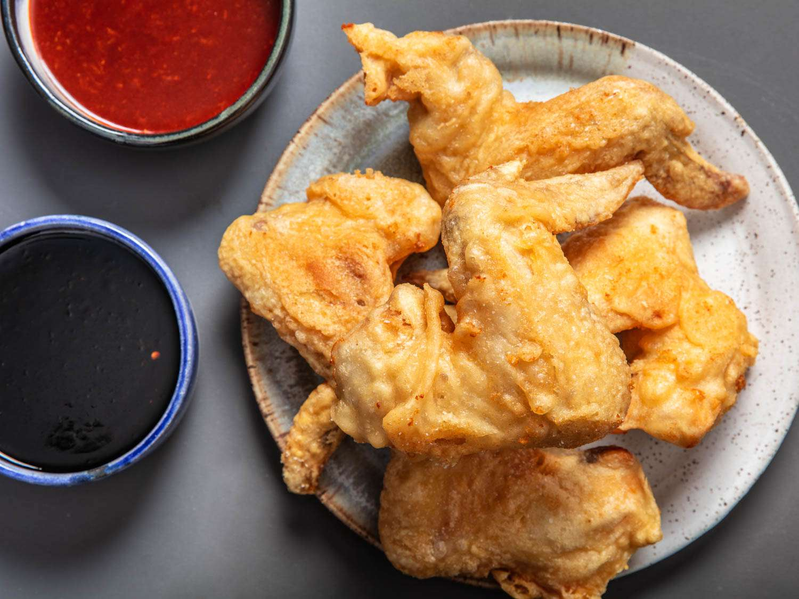

Korean Fried Chicken

Description
You could say we have a thing for fried chicken in our household. My wife recently ran in her first 5k race (and came in 8th in her class!). The only thing she asked me to celebrate with? Not Champagne, not a night on the town, not even a complaint-free girly-movie night. All she wanted was fried chicken.
Ingredients
- Kosher salt
- 3/4 cups corn starch
- 1 teaspoon baking powder
- 2 pounds chicken wings (about 12 whole wings, see note)
Steps
- Combine 2 teaspoons kosher salt, 1/4 cup cornstarch, and 1/2 teaspoon baking powder in a large bowl and whisk until homogenous. Add chicken wings and toss until every surface is coated. Transfer wings to a wire rack set in a rimmed baking sheet, shaking vigorously as you go to get rid of excess coating. Transfer to refrigerator and let rest, uncovered, for at least 30 minutes and up to overnight.
- When ready to fry, preheat oil to 350°F (177°C) in a large wok, Dutch oven, or deep fryer
- Combine remaining 1/2 cup cornstarch, 1/2 teaspoon baking powder, flour, and 2 teaspoons kosher salt in a large bowl and whisk until homogenous. Add water and vodka and whisk until a smooth batter is formed, adding up to 2 tablespoons additional water if batter is too thick. It should have the consistency of thin paint and fall off of the whisk in thin ribbons that instantly disappear as they hit the surface of the batter in the bowl.
- Add half of the wings to the batter. Working one at a time, lift one wing and allow excess batter to drip off, using your finger to get rid of any large pockets or slicks of batter. Carefully lower wing into hot oil. Repeat with remaining wings in first batch. Fry, using a metal spider or slotted spatula to rotate and agitate wings as they cook until evenly golden brown and crisp all over, about 8 minutes. Transfer to a paper towel-lined plate and season immediately with salt. Keep warm while you fry the remaining wings.
- Serve plain, or toss with sweet soy sauce for Korean fried chicken or sweet and spicy chili sauce for Korean fried chicken (or serve sauce on side).